lorenz_partial_additive_uniformLC_p30_obsnoise001_nd60_init15_autodim_lc1em4__validation_3x3x3_sweepProject: Lorenz_INDpartial_NDInitSweep_autodim_D1_NormTrue__JacobianODE
Launched: 2026-04-23T06:45:10Z
Completed: 2026-04-23T11:00:20Z
Outcome: complete_clean
Git: latent-JacobianODE @ 0e2315c
Expected runs: 27
lorenz_partial_additive_uniformLC_p30_obsnoise001_nd60_init15_autodim_lc1em4__validation_3x3x3_sweepDescription
Lorenz partial additive coupling, obs_noise=0.01, n_delays=60, prediction_steps=30, traj_init_steps=15, splitmode (most_recent traj + uniform recon), final_perm_identity=true, init_pca_basis=false, fixed LC=1e-4 (winner from prior LC sweep). 27-run validation grid: 3 obs_noise_scale × 3 recon_w × 3 lpl_w.
Hypothesis
Three orthogonal axes around the proven-good config: - obs_noise_scale {0, 3e-3, 3e-2}: validate the in-flight 4-value sweep's expected signal at the winning cell. - reconstruction_loss_weight {0.3, 1, 3}: split-mode trajectory loss (most_recent) is typically larger than uniform recon — scaling recon up rebalances. Expect best at recon_w >= 1. - latent_prediction_loss_weight {0, 0.1, 1}: tests whether LPL is actively helping at this jointly-trained config. Memory says LPL=1 destroys loop closure for fixed-encoder; less clear for joint training. lpl_w=0 isolates the trajectory + recon + LC signal cleanly.
Success criteria
Swept axes (4): model.n_target_dims_pca_cum_var, training.lightning.latent_prediction_loss_weight, training.lightning.obs_noise_scale, training.lightning.reconstruction_loss_weight
Chosen run (by best_traj_loss): 74c0xzf7 — traj_loss=0.00047, MASE=0.5614, R²=0.9987, LC loss=0.187, epoch=116.0
Swept-axis values at chosen run: model.n_target_dims_pca_cum_var=0.993171 · training.lightning.latent_prediction_loss_weight=1 · training.lightning.obs_noise_scale=0 · training.lightning.reconstruction_loss_weight=3
Runs analyzed: 27 (expected 27)
| run_idx | run_id | model.n_target_dims_pca_cum_var |
training.lightning.latent_prediction_loss_weight |
training.lightning.obs_noise_scale |
training.lightning.reconstruction_loss_weight |
best_traj_loss | best_MASE | R² | LC loss | epoch |
|---|---|---|---|---|---|---|---|---|---|---|
| 8 | 74c0xzf7 |
0.993171 | 1 | 0 | 3 | 0.00047 | 0.5614 | 0.9987 | 0.187 | 116.0 |
| 7 | nojtah7j |
0.993171 | 0.1 | 0 | 3 | 0.00048 | 0.5491 | 0.9987 | 0.151 | 158.0 |
| 2 | jkzb2ikp |
0.993171 | 1 | 0 | 0.3 | 0.00053 | 0.5693 | 0.9985 | 0.115 | 159.0 |
| 5 | vmz2hdtn |
0.993171 | 1 | 0 | 1 | 0.00058 | 0.5942 | 0.9984 | 0.161 | 116.0 |
| 13 | s1v0ehap |
0.993171 | 0.1 | 0.003 | 1 | 0.00065 | 0.6606 | 0.9982 | 0.487 | 100.0 |
| 1 | j5dzkckn |
0.993171 | 0.1 | 0 | 0.3 | 0.00069 | 0.5947 | 0.9980 | 0.151 | 140.0 |
| 4 | 0scgxs7o |
0.993171 | 0.1 | 0 | 1 | 0.00069 | 0.6215 | 0.9980 | 0.166 | 100.0 |
| 16 | 1v0ucgvg |
0.993171 | 0.1 | 0.003 | 3 | 0.00143 | 0.7876 | 0.9960 | 0.537 | 97.0 |
| 11 | hz3vypjh |
0.993171 | 1 | 0.003 | 0.3 | 0.00791 | 1.6450 | 0.9789 | 0.442 | 23.0 |
| 10 | 0gnyd1id |
0.993171 | 0.1 | 0.003 | 0.3 | 0.00868 | 1.6657 | 0.9761 | 0.438 | 18.0 |
| 14 | atnlnb9g |
0.993171 | 1 | 0.003 | 1 | 0.00995 | 1.8676 | 0.9727 | 0.525 | 11.0 |
| 9 | i7gihgjd |
0.993171 | 0 | 0.003 | 0.3 | 0.01166 | 1.6024 | 0.9687 | 0.490 | 57.0 |
| 0 | 7a4n6gqg |
0.993171 | 0 | 0 | 0.3 | 0.02921 | 3.2009 | 0.9207 | 0.080 | 49.0 |
| 17 | xs1h31i3 |
0.993171 | 1 | 0.003 | 3 | 0.04130 | 3.5781 | 0.8886 | 1.946 | 4.0 |
| 3 | jgfik12w |
0.993171 | 0 | 0 | 1 | 0.04182 | 3.4718 | 0.8874 | 0.275 | 37.0 |
| 6 | 42gc2703 |
0.993171 | 0 | 0 | 3 | nan | nan | nan | 0.080 | — |
| 25 | 374mgxz9 |
0.993171 | 0.1 | 0.03 | 3 | 0.08524 | 8.3108 | 0.7707 | 0.515 | 2.0 |
| 26 | u9ztrnn6 |
0.993171 | 1 | 0.03 | 3 | 0.08698 | 8.1785 | 0.7644 | 2.456 | 10.0 |
| 20 | 2n38p014 |
0.993171 | 1 | 0.03 | 0.3 | 0.09039 | 8.5742 | 0.7563 | 0.002 | 1.0 |
| 23 | 00cx66oo |
0.993171 | 1 | 0.03 | 1 | 0.09108 | 8.6170 | 0.7551 | 0.005 | — |
| 22 | cz3frtd8 |
0.993171 | 0.1 | 0.03 | 1 | 0.09143 | 8.6460 | 0.7542 | 0.046 | — |
| 19 | yplnffa6 |
0.993171 | 0.1 | 0.03 | 0.3 | 0.09230 | 8.6837 | 0.7517 | 0.035 | — |
| 24 | h0oqrnra |
0.993171 | 0 | 0.03 | 3 | 0.09329 | 8.7673 | 0.7491 | 0.428 | — |
| 21 | semlzcnd |
0.993171 | 0 | 0.03 | 1 | 0.10869 | 9.5152 | 0.7072 | 0.233 | — |
| 18 | sed3nwvt |
0.993171 | 0 | 0.03 | 0.3 | 0.12927 | 10.1891 | 0.6512 | 0.124 | — |
| 12 | q6qozbt8 |
0.993171 | 0 | 0.003 | 1 | 0.31320 | 12.6050 | 0.1512 | 0.046 | — |
| 15 | f4meg5oy |
0.993171 | 0 | 0.003 | 3 | 7.91853 | 47.3983 | -20.5079 | 0.133 | — |
obs_noise_scale| obs_noise_scale | Best LC weight | Best traj loss | MASE at best | R² | LC loss | epoch |
|---|---|---|---|---|---|---|
| 0.0 | 1.0e-04 | 0.00047 | 0.5614 | 0.9987 | 0.187 | 116.0 |
| 0.003 | 1.0e-04 | 0.00065 | 0.6606 | 0.9982 | 0.487 | 100.0 |
| 0.03 | 1.0e-04 | 0.08524 | 8.3108 | 0.7707 | 0.515 | 2.0 |
| Criterion | Verdict | Note |
|---|---|---|
| All 27 runs train without divergence | Unknown | |
| Best val traj_loss is at most 2x worse than the winner's 3.98e-4 | Unknown | |
| Identifies which axis matters most: obs_noise_scale, recon_w, or lpl_w | Unknown | |
| Best cell has selection_LC <= sqrt(n_target_dims) (passes C2) | Unknown |
Automated verdicts use simple numeric-threshold parsing and may mis-classify qualitative criteria. The Discussion section below takes precedence.
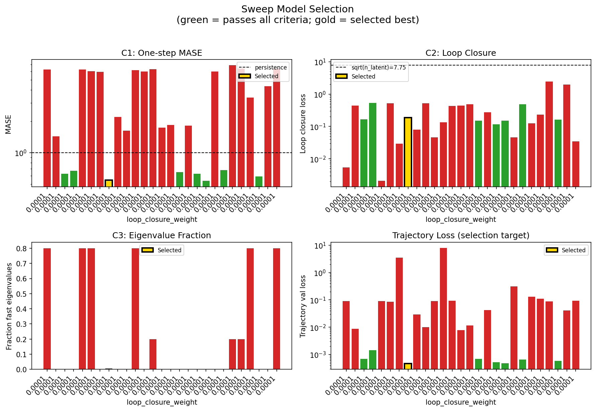
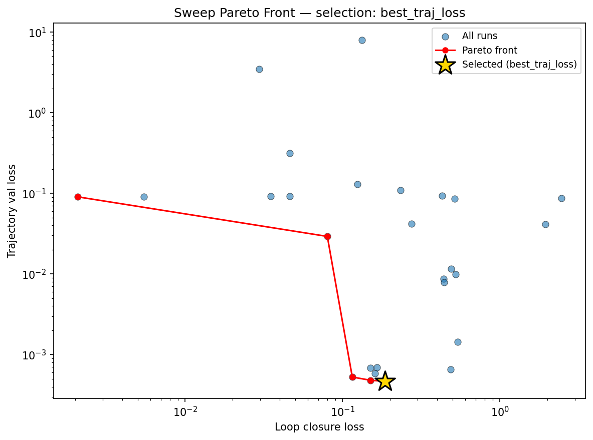
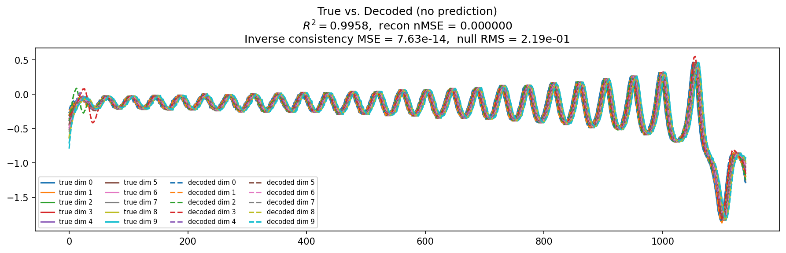
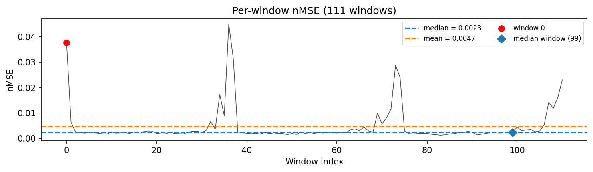
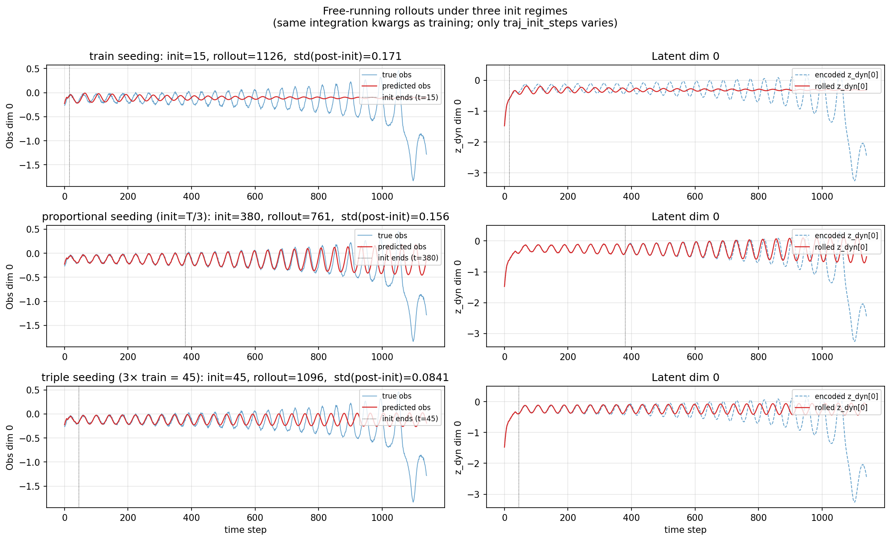
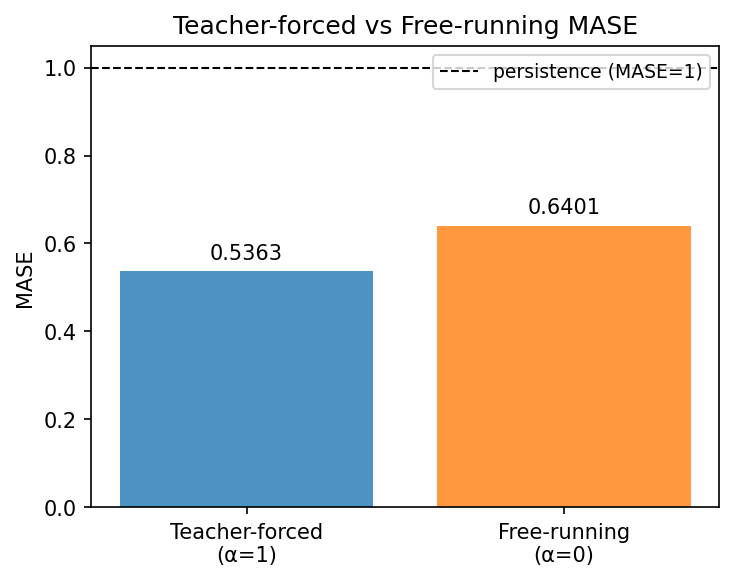
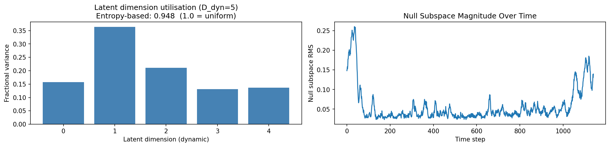
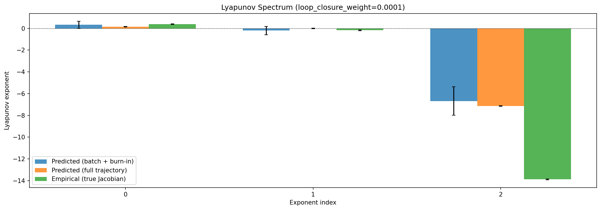
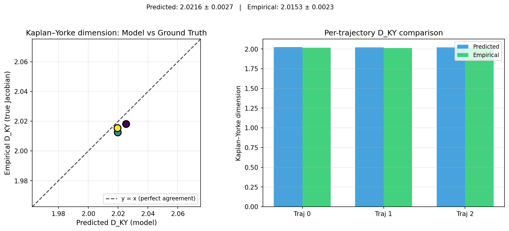
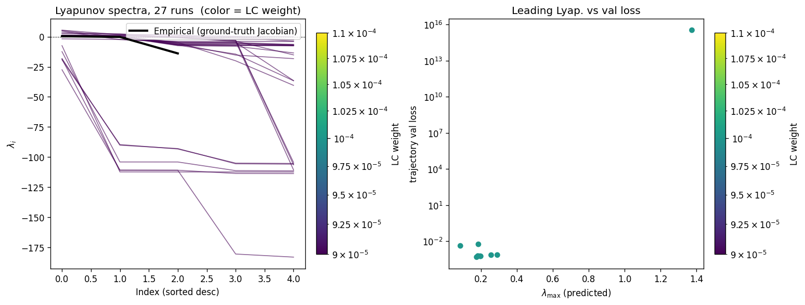
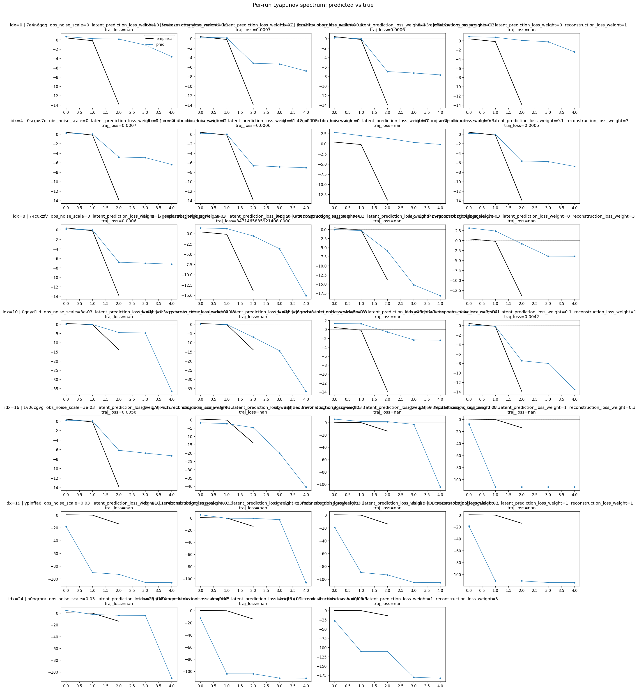
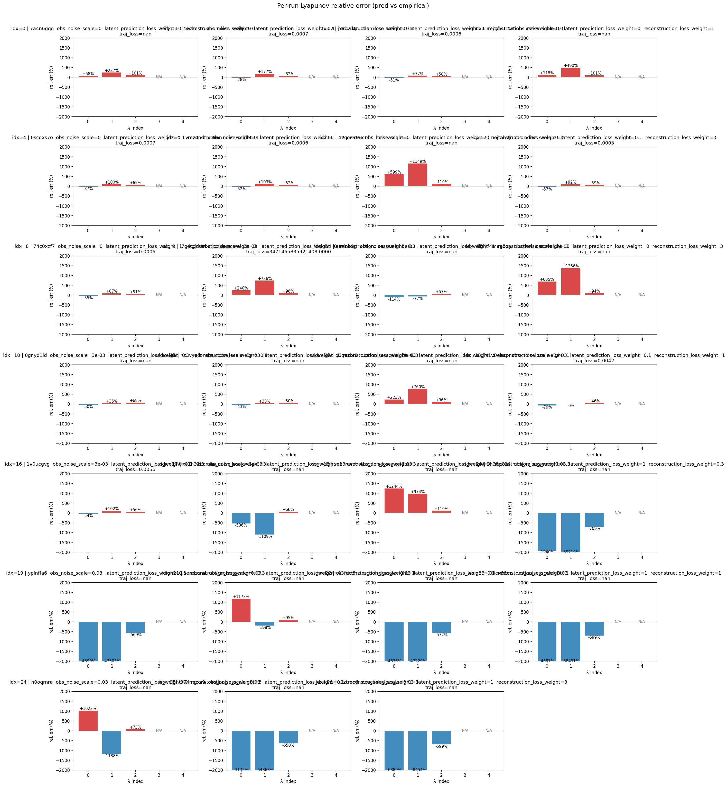
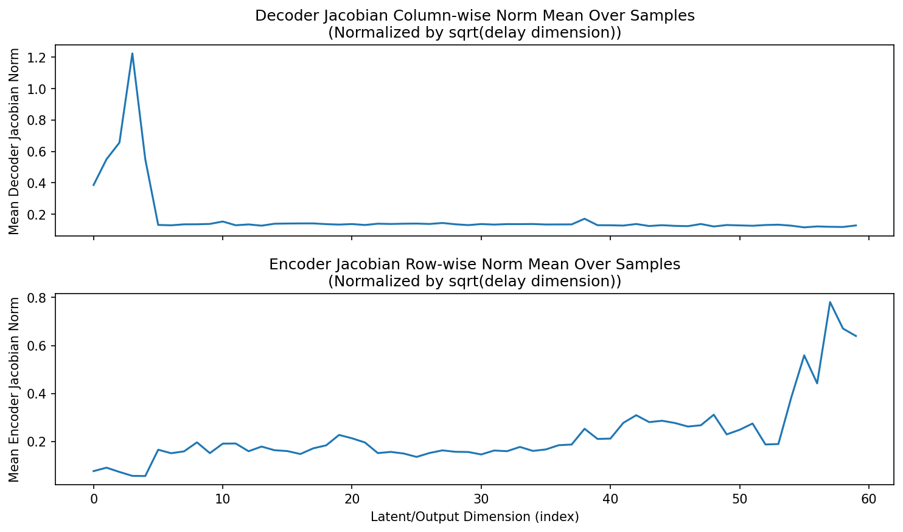
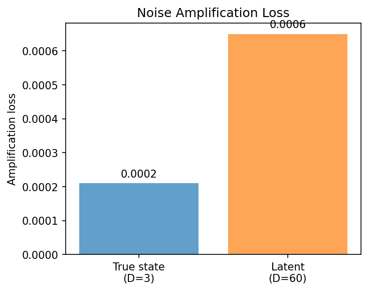
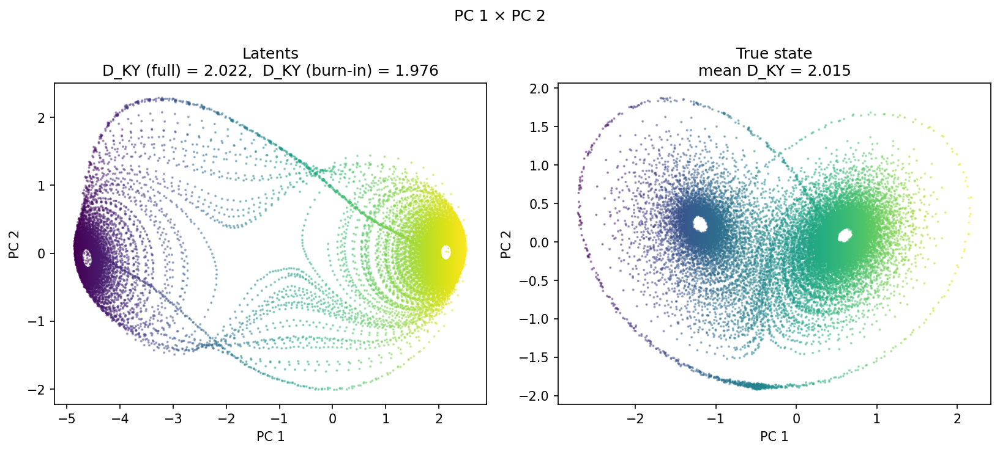
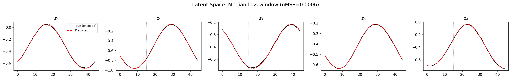
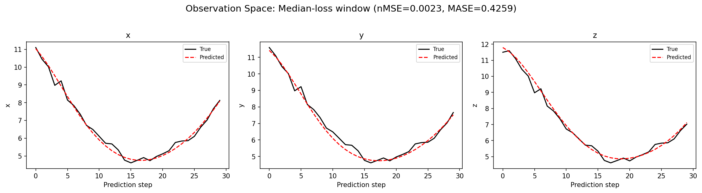
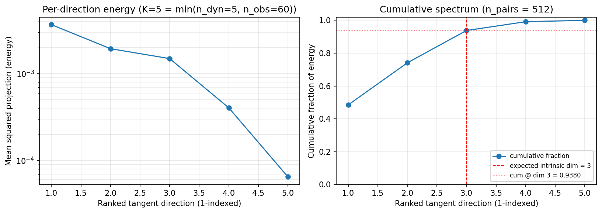
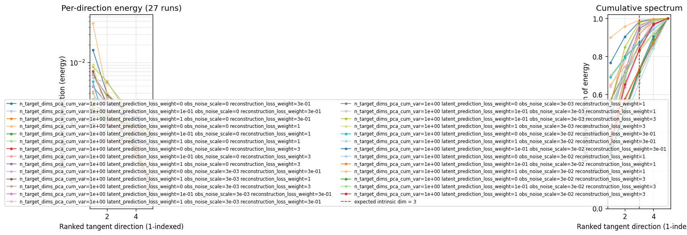
(to be written)
run_analytics stdoutrun_analyticsNo run_id provided — selecting best run from group 'lorenz_partial_additive_uniformLC_p30_obsnoise001_nd60_init15_autodim_lc1em4__validation_3x3x3_sweep' ...
Found 27 total runs in JacobianODE/Lorenz_INDpartial_NDInitSweep_autodim_D1_NormTrue__JacobianODE (group=lorenz_partial_additive_uniformLC_p30_obsnoise001_nd60_init15_autodim_lc1em4__validation_3x3x3_sweep)
All runs (state, loop_closure_weight, tangent_entropy_weight, kl_dyn_weight):
7a4n6gqg: state=finished, lc=0.0001, te=0.0, kl_dyn=0.0
j5dzkckn: state=finished, lc=0.0001, te=0.0, kl_dyn=0.0
jkzb2ikp: state=finished, lc=0.0001, te=0.0, kl_dyn=0.0
jgfik12w: state=finished, lc=0.0001, te=0.0, kl_dyn=0.0
0scgxs7o: state=finished, lc=0.0001, te=0.0, kl_dyn=0.0
vmz2hdtn: state=finished, lc=0.0001, te=0.0, kl_dyn=0.0
42gc2703: state=finished, lc=0.0001, te=0.0, kl_dyn=0.0
nojtah7j: state=finished, lc=0.0001, te=0.0, kl_dyn=0.0
74c0xzf7: state=finished, lc=0.0001, te=0.0, kl_dyn=0.0
i7gihgjd: state=finished, lc=0.0001, te=0.0, kl_dyn=0.0
atnlnb9g: state=finished, lc=0.0001, te=0.0, kl_dyn=0.0
f4meg5oy: state=finished, lc=0.0001, te=0.0, kl_dyn=0.0
0gnyd1id: state=finished, lc=0.0001, te=0.0, kl_dyn=0.0
hz3vypjh: state=finished, lc=0.0001, te=0.0, kl_dyn=0.0
q6qozbt8: state=finished, lc=0.0001, te=0.0, kl_dyn=0.0
s1v0ehap: state=finished, lc=0.0001, te=0.0, kl_dyn=0.0
1v0ucgvg: state=finished, lc=0.0001, te=0.0, kl_dyn=0.0
xs1h31i3: state=finished, lc=0.0001, te=0.0, kl_dyn=0.0
sed3nwvt: state=finished, lc=0.0001, te=0.0, kl_dyn=0.0
2n38p014: state=finished, lc=0.0001, te=0.0, kl_dyn=0.0
yplnffa6: state=finished, lc=0.0001, te=0.0, kl_dyn=0.0
semlzcnd: state=finished, lc=0.0001, te=0.0, kl_dyn=0.0
cz3frtd8: state=finished, lc=0.0001, te=0.0, kl_dyn=0.0
00cx66oo: state=finished, lc=0.0001, te=0.0, kl_dyn=0.0
h0oqrnra: state=finished, lc=0.0001, te=0.0, kl_dyn=0.0
374mgxz9: state=finished, lc=0.0001, te=0.0, kl_dyn=0.0
u9ztrnn6: state=finished, lc=0.0001, te=0.0, kl_dyn=0.0
slurm_timeout_min not found in any run config — falling back to 180 min
Including 7a4n6gqg (lc=0.0001): use_all_runs=True (state=finished)
Including j5dzkckn (lc=0.0001): use_all_runs=True (state=finished)
Including jkzb2ikp (lc=0.0001): use_all_runs=True (state=finished)
Including jgfik12w (lc=0.0001): use_all_runs=True (state=finished)
Including 0scgxs7o (lc=0.0001): use_all_runs=True (state=finished)
Including vmz2hdtn (lc=0.0001): use_all_runs=True (state=finished)
Including 42gc2703 (lc=0.0001): use_all_runs=True (state=finished)
Including nojtah7j (lc=0.0001): use_all_runs=True (state=finished)
Including 74c0xzf7 (lc=0.0001): use_all_runs=True (state=finished)
Including i7gihgjd (lc=0.0001): use_all_runs=True (state=finished)
Including atnlnb9g (lc=0.0001): use_all_runs=True (state=finished)
Including f4meg5oy (lc=0.0001): use_all_runs=True (state=finished)
Including 0gnyd1id (lc=0.0001): use_all_runs=True (state=finished)
Including hz3vypjh (lc=0.0001): use_all_runs=True (state=finished)
Including q6qozbt8 (lc=0.0001): use_all_runs=True (state=finished)
Including s1v0ehap (lc=0.0001): use_all_runs=True (state=finished)
Including 1v0ucgvg (lc=0.0001): use_all_runs=True (state=finished)
Including xs1h31i3 (lc=0.0001): use_all_runs=True (state=finished)
Including sed3nwvt (lc=0.0001): use_all_runs=True (state=finished)
Including 2n38p014 (lc=0.0001): use_all_runs=True (state=finished)
Including yplnffa6 (lc=0.0001): use_all_runs=True (state=finished)
Including semlzcnd (lc=0.0001): use_all_runs=True (state=finished)
Including cz3frtd8 (lc=0.0001): use_all_runs=True (state=finished)
Including 00cx66oo (lc=0.0001): use_all_runs=True (state=finished)
Including h0oqrnra (lc=0.0001): use_all_runs=True (state=finished)
Including 374mgxz9 (lc=0.0001): use_all_runs=True (state=finished)
Including u9ztrnn6 (lc=0.0001): use_all_runs=True (state=finished)
Found 27 effectively-done sweep runs:
loop_closure_weight=0.0001, tangent_entropy_weight=0.0, kl_dyn_weight=0.0 -> run_id=00cx66oo
loop_closure_weight=0.0001, tangent_entropy_weight=0.0, kl_dyn_weight=0.0 -> run_id=0gnyd1id
loop_closure_weight=0.0001, tangent_entropy_weight=0.0, kl_dyn_weight=0.0 -> run_id=0scgxs7o
loop_closure_weight=0.0001, tangent_entropy_weight=0.0, kl_dyn_weight=0.0 -> run_id=1v0ucgvg
loop_closure_weight=0.0001, tangent_entropy_weight=0.0, kl_dyn_weight=0.0 -> run_id=2n38p014
loop_closure_weight=0.0001, tangent_entropy_weight=0.0, kl_dyn_weight=0.0 -> run_id=374mgxz9
loop_closure_weight=0.0001, tangent_entropy_weight=0.0, kl_dyn_weight=0.0 -> run_id=42gc2703
loop_closure_weight=0.0001, tangent_entropy_weight=0.0, kl_dyn_weight=0.0 -> run_id=74c0xzf7
loop_closure_weight=0.0001, tangent_entropy_weight=0.0, kl_dyn_weight=0.0 -> run_id=7a4n6gqg
loop_closure_weight=0.0001, tangent_entropy_weight=0.0, kl_dyn_weight=0.0 -> run_id=atnlnb9g
loop_closure_weight=0.0001, tangent_entropy_weight=0.0, kl_dyn_weight=0.0 -> run_id=cz3frtd8
loop_closure_weight=0.0001, tangent_entropy_weight=0.0, kl_dyn_weight=0.0 -> run_id=f4meg5oy
loop_closure_weight=0.0001, tangent_entropy_weight=0.0, kl_dyn_weight=0.0 -> run_id=h0oqrnra
loop_closure_weight=0.0001, tangent_entropy_weight=0.0, kl_dyn_weight=0.0 -> run_id=hz3vypjh
loop_closure_weight=0.0001, tangent_entropy_weight=0.0, kl_dyn_weight=0.0 -> run_id=i7gihgjd
loop_closure_weight=0.0001, tangent_entropy_weight=0.0, kl_dyn_weight=0.0 -> run_id=j5dzkckn
loop_closure_weight=0.0001, tangent_entropy_weight=0.0, kl_dyn_weight=0.0 -> run_id=jgfik12w
loop_closure_weight=0.0001, tangent_entropy_weight=0.0, kl_dyn_weight=0.0 -> run_id=jkzb2ikp
loop_closure_weight=0.0001, tangent_entropy_weight=0.0, kl_dyn_weight=0.0 -> run_id=nojtah7j
loop_closure_weight=0.0001, tangent_entropy_weight=0.0, kl_dyn_weight=0.0 -> run_id=q6qozbt8
loop_closure_weight=0.0001, tangent_entropy_weight=0.0, kl_dyn_weight=0.0 -> run_id=s1v0ehap
loop_closure_weight=0.0001, tangent_entropy_weight=0.0, kl_dyn_weight=0.0 -> run_id=sed3nwvt
loop_closure_weight=0.0001, tangent_entropy_weight=0.0, kl_dyn_weight=0.0 -> run_id=semlzcnd
loop_closure_weight=0.0001, tangent_entropy_weight=0.0, kl_dyn_weight=0.0 -> run_id=u9ztrnn6
loop_closure_weight=0.0001, tangent_entropy_weight=0.0, kl_dyn_weight=0.0 -> run_id=vmz2hdtn
loop_closure_weight=0.0001, tangent_entropy_weight=0.0, kl_dyn_weight=0.0 -> run_id=xs1h31i3
loop_closure_weight=0.0001, tangent_entropy_weight=0.0, kl_dyn_weight=0.0 -> run_id=yplnffa6
n_dims=60, n_latent=60, n_dyn=5, dt=0.0150
run=00cx66oo: DiagnosticMetrics(one_step_mase=6.256218910217285, loop_closure_loss=0.005482424050569534, fast_eigenvalue_fraction=0.800000011920929, trajectory_val_loss=0.09108421206474304) (from W&B history)
run=0gnyd1id: DiagnosticMetrics(one_step_mase=1.43284010887146, loop_closure_loss=0.4384380280971527, fast_eigenvalue_fraction=0.0, trajectory_val_loss=0.008683844469487667) (from W&B history)
run=0scgxs7o: DiagnosticMetrics(one_step_mase=0.6257921457290649, loop_closure_loss=0.1660224348306656, fast_eigenvalue_fraction=0.0, trajectory_val_loss=0.0006913045071996748) (from W&B history)
run=1v0ucgvg: DiagnosticMetrics(one_step_mase=0.6691833138465881, loop_closure_loss=0.5372636318206787, fast_eigenvalue_fraction=0.0, trajectory_val_loss=0.0014305236982181668) (from W&B history)
run=2n38p014: DiagnosticMetrics(one_step_mase=6.261649131774902, loop_closure_loss=0.0020803813822567463, fast_eigenvalue_fraction=0.800000011920929, trajectory_val_loss=0.09038642048835754) (from W&B history)
run=374mgxz9: DiagnosticMetrics(one_step_mase=6.020106315612793, loop_closure_loss=0.514611542224884, fast_eigenvalue_fraction=0.800000011920929, trajectory_val_loss=0.08523919433355331) (from W&B history)
run=42gc2703: DiagnosticMetrics(one_step_mase=5.959017276763916, loop_closure_loss=0.029621947556734085, fast_eigenvalue_fraction=0.0, trajectory_val_loss=3.4790449142456055) (from W&B history)
run=74c0xzf7: DiagnosticMetrics(one_step_mase=0.5448904037475586, loop_closure_loss=0.1866375207901001, fast_eigenvalue_fraction=0.0, trajectory_val_loss=0.0004662402207031846) (from W&B history)
run=7a4n6gqg: DiagnosticMetrics(one_step_mase=2.1912646293640137, loop_closure_loss=0.08006828278303146, fast_eigenvalue_fraction=0.0, trajectory_val_loss=0.02920607291162014) (from W&B history)
run=atnlnb9g: DiagnosticMetrics(one_step_mase=1.6272836923599243, loop_closure_loss=0.5249913930892944, fast_eigenvalue_fraction=0.0, trajectory_val_loss=0.009946111589670181) (from W&B history)
run=cz3frtd8: DiagnosticMetrics(one_step_mase=6.15846061706543, loop_closure_loss=0.046090345829725266, fast_eigenvalue_fraction=0.800000011920929, trajectory_val_loss=0.09142646938562393) (from W&B history)
run=f4meg5oy: DiagnosticMetrics(one_step_mase=6.011078357696533, loop_closure_loss=0.13304120302200317, fast_eigenvalue_fraction=0.0, trajectory_val_loss=7.918525218963623) (from W&B history)
run=h0oqrnra: DiagnosticMetrics(one_step_mase=6.296809673309326, loop_closure_loss=0.4281613826751709, fast_eigenvalue_fraction=0.20000000298023224, trajectory_val_loss=0.09329237788915634) (from W&B history)
run=hz3vypjh: DiagnosticMetrics(one_step_mase=1.7285279035568237, loop_closure_loss=0.44220104813575745, fast_eigenvalue_fraction=0.0, trajectory_val_loss=0.007914843037724495) (from W&B history)
run=i7gihgjd: DiagnosticMetrics(one_step_mase=1.841811180114746, loop_closure_loss=0.48970291018486023, fast_eigenvalue_fraction=0.0, trajectory_val_loss=0.011664340272545815) (from W&B history)
run=j5dzkckn: DiagnosticMetrics(one_step_mase=0.6484943628311157, loop_closure_loss=0.15062889456748962, fast_eigenvalue_fraction=0.0, trajectory_val_loss=0.0006866564508527517) (from W&B history)
run=jgfik12w: DiagnosticMetrics(one_step_mase=1.8171162605285645, loop_closure_loss=0.2751888632774353, fast_eigenvalue_fraction=0.0, trajectory_val_loss=0.04182140901684761) (from W&B history)
run=jkzb2ikp: DiagnosticMetrics(one_step_mase=0.6277046799659729, loop_closure_loss=0.11539290100336075, fast_eigenvalue_fraction=0.0, trajectory_val_loss=0.0005272146081551909) (from W&B history)
run=nojtah7j: DiagnosticMetrics(one_step_mase=0.5349944829940796, loop_closure_loss=0.15085172653198242, fast_eigenvalue_fraction=0.0, trajectory_val_loss=0.00048034294741228223) (from W&B history)
run=q6qozbt8: DiagnosticMetrics(one_step_mase=5.998361587524414, loop_closure_loss=0.046220120042562485, fast_eigenvalue_fraction=0.0, trajectory_val_loss=0.3132022023200989) (from W&B history)
run=s1v0ehap: DiagnosticMetrics(one_step_mase=0.6774917840957642, loop_closure_loss=0.4865623116493225, fast_eigenvalue_fraction=0.0, trajectory_val_loss=0.0006520866882055998) (from W&B history)
run=sed3nwvt: DiagnosticMetrics(one_step_mase=6.875199794769287, loop_closure_loss=0.12395723164081573, fast_eigenvalue_fraction=0.20000000298023224, trajectory_val_loss=0.12926781177520752) (from W&B history)
run=semlzcnd: DiagnosticMetrics(one_step_mase=6.397987365722656, loop_closure_loss=0.23277951776981354, fast_eigenvalue_fraction=0.20000000298023224, trajectory_val_loss=0.10868995636701584) (from W&B history)
run=u9ztrnn6: DiagnosticMetrics(one_step_mase=3.371138095855713, loop_closure_loss=2.455885887145996, fast_eigenvalue_fraction=0.800000011920929, trajectory_val_loss=0.08698488026857376) (from W&B history)
run=vmz2hdtn: DiagnosticMetrics(one_step_mase=0.5898659825325012, loop_closure_loss=0.16086150705814362, fast_eigenvalue_fraction=0.0, trajectory_val_loss=0.0005827464046888053) (from W&B history)
run=xs1h31i3: DiagnosticMetrics(one_step_mase=4.339137077331543, loop_closure_loss=1.946221947669983, fast_eigenvalue_fraction=0.0, trajectory_val_loss=0.04130418598651886) (from W&B history)
run=yplnffa6: DiagnosticMetrics(one_step_mase=6.3901519775390625, loop_closure_loss=0.03484601899981499, fast_eigenvalue_fraction=0.800000011920929, trajectory_val_loss=0.09230495244264603) (from W&B history)
Ranking method: best_traj_loss
Best run ID: 74c0xzf7
Best loop_closure_weight: 0.0001
Best tangent_entropy_weight: 0.0
Best kl_dyn_weight: 0.0
Best traj loss: 0.000466
Criteria applied: ['C1', 'C2', 'C3']
Surviving: 8 / 27
Auto-selected run_id: 74c0xzf7
======================================================================
PARETO FRONTIER RUNS (5 runs)
======================================================================
Run ID LC Loss Traj Val Loss
------------ -------------- --------------
2n38p014 0.002080 0.090386
7a4n6gqg 0.080068 0.029206
jkzb2ikp 0.115393 0.000527
nojtah7j 0.150852 0.000480
74c0xzf7 0.186638 0.000466 <-- selected
======================================================================
RANKING METHOD COMPARISON (over 8 survivors)
======================================================================
Method Run ID LC Loss Traj Val Loss
---------------------- ------------ -------------- --------------
best_traj_loss 74c0xzf7 0.186638 0.000466 <-- active
pareto_knee nojtah7j 0.150852 0.000480
geo_rank jkzb2ikp 0.115393 0.000527
minimax_rank jkzb2ikp 0.115393 0.000527
geo_log_score 74c0xzf7 0.186638 0.000466
minimax_log_score jkzb2ikp 0.115393 0.000527
======================================================================
Loading run 74c0xzf7 from JacobianODE/Lorenz_INDpartial_NDInitSweep_autodim_D1_NormTrue__JacobianODE ...
Train dataset shape: torch.Size([24112, 45, 60])
Validation dataset shape: torch.Size([7672, 45, 60])
Test dataset shape: torch.Size([3288, 45, 60])
Train trajectories dataset shape: torch.Size([22, 1141, 60])
Validation trajectories dataset shape: torch.Size([7, 1141, 60])
Test trajectories dataset shape: torch.Size([3, 1141, 60])
Loading checkpoint epoch=116-step=23400.ckpt...
Computing reconstruction ...
Computing MASE ...
Teacher-forced MASE: 0.5363
Free-running MASE: 0.6401
Computing latent utilization ...
Entropy-based utilization: 0.948
Null subspace mean RMS: 7.120842e-02
Computing Lyapunov exponents ...
Computing full-trajectory Lyapunov (3 test trajs, T=1141) ...
Predicted Lyapunov exponents (batch+burn-in, 128 windowed trajs):
λ_1 = +0.3269 ± 0.3262
λ_2 = -0.2009 ± 0.3861
λ_3 = -6.6797 ± 1.3160
λ_4 = -7.0109 ± 0.9659
λ_5 = -7.2033 ± 0.8322
Predicted Lyapunov exponents (full-length, 3 test trajs):
λ_1 = +0.1604 ± 0.0285
λ_2 = -0.0066 ± 0.0239
λ_3 = -7.1331 ± 0.0298
λ_4 = -7.3092 ± 0.0054
λ_5 = -7.3765 ± 0.0123
Empirical Lyapunov exponents (mean ± std):
λ_1 = +0.3846 ± 0.0251
λ_2 = -0.1716 ± 0.0444
λ_3 = -13.8799 ± 0.0398
Mean KY dim (predicted): 2.022 ± 0.003
Mean KY dim (empirical): 2.015 ± 0.002
Mean KY dim (burn-in): 1.976 ± 0.226
Computing prediction windows ...
Windows: 111 — nMSE min=0.0012, median=0.0023, mean=0.0047, max=0.0450
Computing long-trajectory free-running rollouts ...
Computing encoder/decoder Jacobians ...
encoder_jacobian: (128, 60, 60)
decoder_jacobian: (128, 60, 60)
Computing amplification loss ...
Amplification loss — True state: 0.000210
Amplification loss — Latent: 0.000650
Computing tangent space spectrum ...